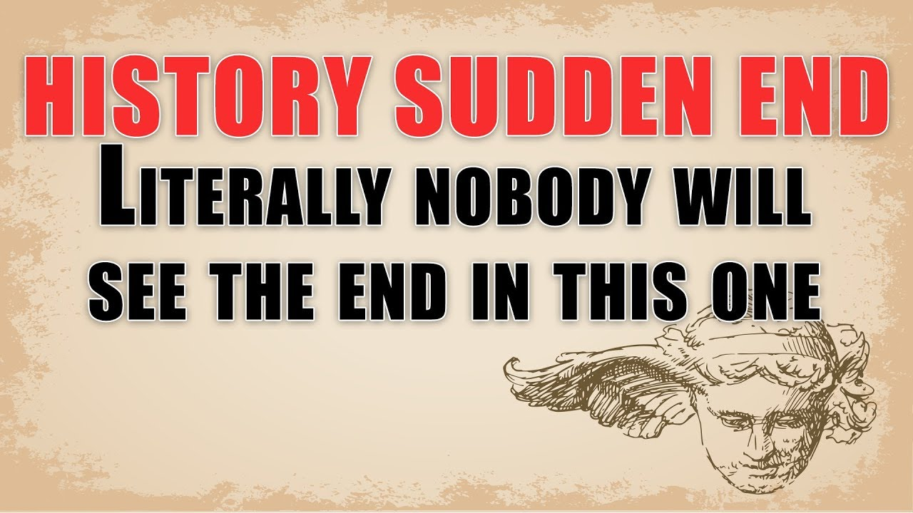

It is literally true that you can succeed best and quickest by helping others to succeed.

It is literally true that you can succeed best and quickest by helping others to succeed. —— Napolean Hill
帮助别人成功是让自己成功最好最快的方式，这句话是真的。——拿破仑·希尔（新闻工作者）
literally[adv. 按照原义；根据字面意思；字面上地]: If a word or expression is translated literally, its most simple or basic meaning is translated.
She only gets the meaning of this sentence literally. 她只是从字面上理解这句话的意思。
literally[adv. 确实地；真正地]: You use literally to emphasize that what you are saying is true, even though it seems exaggerated or surprising.
The children are literally starving. 这些孩子确实在挨饿。